The mathematician may be compared to a designer of garments, who is utterly oblivious of the creatures whom his garments may fit. To be sure, his art originated in the necessity for clothing such creatures, but this was long ago; to this day a shape will occasionally appear which will fit into the garment as if the garment had been made for it. Then there is no end of surprise and delight.
Like the authors, your instructor is probably a highly trained, professional mathematician. As mathematicians we solve problems and we build logical structures. This is what we were trained to do.
The structures we build are what makes mathematics useful but that is not why we build them. Most of the time we create simply for the love of the creative act itself. Usefulness, as such, is often a secondary consideration. In this, mathematicians are more like poets or artists than scientists or engineers. By and large, we consider the act of creation to be its own reward. It is a remarkable fact that sometimes the logical structures we build turn out to be applicable to problems in the real world.
When we explain our mathematical works to each other we mathematicians only display the finished product in much the same way that an artist or an architect will display their work without all of the behind-the-scenes sketches and pencil lines (and mistakes), that they made along the way. We start with simple ideas and bit by bit, piece by piece, we assemble our mathematics like we would a puzzle. When we explain it to others we ignore all of the mistakes we made along the way for the same reason that artists do. They are not part the finished product. That is how we understand, and think about our mathematics, and that is how we talk to each other about it. Displayed in this manner a mathematical structure is truly as beautiful as any artistic creation.
But in this text we are not talking to other mathematicians. We are talking to you, a mathematics student. And you are (presumably) encountering Calculus for the first time. This is not the time to build Calculus up from its logical foundations and expect you to appreciate its beauty. This is the time to show you where Calculus came from, how it was built, what problems it was invented to solve, and, perhaps most importantly, how well Calculus addresses those problems. Once that is done you will appreciate it, or not, as your own sense of aesthetics allows.
As you proceed through this text know that it took several centuries for some of the most brilliant persons who have ever lived to polish the ideas of Calculus to their current luster. But just as a painting is unappealing before it is finished, Calculus is not lustrous until you can look back on it as a whole. Until then it takes a lot of calculation and thought to see how the ideas work together. In the end, we hope you will come to see that it is worth all of the work and frustration.
In this chapter we will be exploring the ad hoc techniques used by the mathematical pioneers who were trying to solve some very real and very specific problems using only the tools that you possess now: Geometry, Algebra, and Trigonometry. The pre-Calculus techniques they came up with substantially influenced the form that Calculus eventually took. If the pioneers had been different people, or if they had begun with different tools Calculus would likely have taken a different form. Or it might not have been invented at all. The pre-Calculus methods we will see in this chapter represent the first ideas that eventually led to Calculus. The supporting logical structure came later, much later.
Thus we will begin with the intuitive notions that preceded Calculus. But we will not hide the problems inherent in this approach. Quite the reverse. It is our intention to highlight them as much as possible. The underlying difficulties are real and they need to be understood. We want you to be aware of them so that in Chapter 13 when we begin to address them, the necessity of the rather severe formalism we are forced to adopt will be clear to you.
For example, we will soon start talking about “the line tangent to a curve.” You have a very clear image of what is meant by “tangent line” and that will suffice to begin. But, it is actually very hard to define precisely what we mean by “the line tangent to a curve.”
Later we will encounter a similar difficulty with the idea of a continuous curve. The phrase “continuous curve” surely conjures up a very clear image in your mind. Nothing could be clearer really. Continuous curves are unbroken curves, right? This is oso intuitively obvious that mathematicians did not bother to define it formally for millennia. Most likely you don’t see the need for a formal definition either. Yet. But “continuity” is very hard to define in a mathematically rigorous manner. The first person to give a rigorous definition in the modern sense was Bernhard Bolzano 3 in 1817.
One of our goals is to set up the conditions under which it will become very clear to you why your intuitive image of a “tangent line,” or a “continuous curve” is not sufficient; why these are hard concepts to define. We want you to bump into the difficulties that come with the intuitive understanding you have right now so that you will see — and appreciate — why the definitions we will eventually be offering are better. Or at least more useful.
But have some sympathy for the poor instructor! Everything we do in the first part of this text, especially in this section, goes directly against all of the instructor’s training as a mathematician. Instructors would be much happier with us if we would define the terms “the line tangent to a curve” and “continuous curve” before we use them because that is the way they see and appreciate the beauty of our topic.
Indeed, it may well go against your own sensibilities as well. If you find yourself getting irritated with the imprecision of our presentation you may well be a mathematician yourself, at least by temperament. In that case, all you lack is training and you can get that by changing your major to mathematics. Think about it. If you are not a mathematician at heart then this first part of the text is the part you will probably find most useful and interesting. This is where we will try to elucidate the most powerful problem solving tools that came from Calculus and show you how to use them. But the problems are only representative. Pay attention to the techniques, not to the problems themselves.
The problem is that this is not (in our opinion) a good way to learn Calculus. So we will be following in the footsteps of our forebears. We will proceed using intuitive ideas until they become too unwieldy to use. Only after we have found the properties we need from a concept (like “tangent”) will we offer formal definitions. Hopefully it will then be clear to you why the definitions are needed, and why they are stated as they are.
So to the instructor, or anyone else of a mathematical bent who might be reading this, we offer our apologies for proceeding in what we know looks like the wrong way around. As mathematicians ourselves we certainly feel the same discomfort you do. But in this text we are not writing as mathematicians for other mathematicians, we are writing as teachers for students. Please bear with us. “Though this be madness, yet there is method in’t.” 6
Section3.2Some Preliminaries
In \(1537\)Niccolo Fontana 7 (1500-1557), also known as “Targtaglia” (The Stutterer), wrote a book titled Nova Scientia (New Science) wherein he analyzed the motion of objects moving under the influence of gravity near the surface of the earth as it was understood at the time.
There is much allegory in the title page of his book 8 . Inside the large ring is a group of Muses surrounding Tartaglia and observing the trajectory of a cannonball. This represents the fact that this was one of the first works which studied the science of projectile motion using mathematical principles rather than empirical data and guesswork. At the door of the larger ring is Euclid, representing the notion that one can only enter through an understanding of Euclid’s Elements (Geometry). Clearly the man trying to scale the wall does not understand Geometry. His ladder is far too short.
The smaller, slightly raised ring is occupied by Philosophia (wisdom) seated on a throne. Of course, the only entrance to the ring of philosophy, and therefore understanding, is through the larger ring of mathematics. At that gate are Aristotle 9 (384-322 BCE) (on the mathematics side) and Plato 10 (427-347 BCE) (on the philosophy side). On the banner is the motto of Plato’s Academy 11 , “Let no one ignorant of geometry enter.” Of course, such allegory is open to interpretation, but it seems pretty clear that Geometry (mathematics) would play an important role in the New Science.
The caption below the illustration means, “The Mathematical sciences speak: Who wishes to know the various causes of things, learn about us. The way is open to all.”
From the beginning of the Renaissance to the present day the use of mathematics to describe and analyze physical phenomena has become ever the more normal mode of analysis in science. At first the Geometry of the Greeks, including Trigonometry, was at the forefront, but as time went on newer methods were invented. Primary among these were Algebra and then, eventually, Calculus.
Algebra came first but it merged with Geometry to form what we now call Analytic Geometry. When Calculus was invented it supplemented, enhanced, and expanded its predecessors.
But none of the other fields of mathematics disappeared. Geometry, Trigonometry, Algebra, and Analytic Geometry remain very useful tools in science. But they have, in a sense, become subordinate to Calculus.
There are physical problems that are very difficult to solve using either Algebra or Geometry but which become relatively easy once Calculus has been mastered. Attempts to address those difficult-to-solve problems are what led to the invention of Calculus and several of the very ingenious techniques developed were very Calculus-like. In this chapter we will look briefly at some of these pre-Calculus techniques.
Warning: You may be tempted to disregard this chapter and get on to “the Calculus part.” This is an error. The story of Calculus, what sorts of problems it was invented to address, and why the tools of Calculus developed in the way that they did, will help you understand what Calculus is, and what it is not.
Section3.3The Laziness of Nature
Subsection3.3.1Nature is Lazy
In order to apply mathematical principles to the study of physical phenomena we need to agree on some foundational assumptions which seem to govern the behavior of nature. A fundamental tenet that scientists use is this: Nature is lazy! That is, nature optimizes. It tries to do things in the most efficient (optimal) manner possible. The most common form such Optimization Problems take is to find the value of the independent variable (often denoted \(x\)) which makes the dependent variable (often denoted \(y\)) as large or as small as possible.
To illustrate the usefulness of this principle consider a beam of light bouncing off of a flat mirror. Empirical evidence (that is, evidence gained from measuring the angles) suggests that the angle of incidence is equal to the angle of reflection. However, no matter how many experiments we run there is always the chance that there is some configuration of lights and mirrors we’ve missed. A configuration where the angles are not equal.
Let’s try a thought experiment.
We want to discover what path a beam of light would travel between the points \(A\) and \(B\) in the figure below assuming that it first reflects off of the line \(m\) (\(m\) for mirror, not slope).
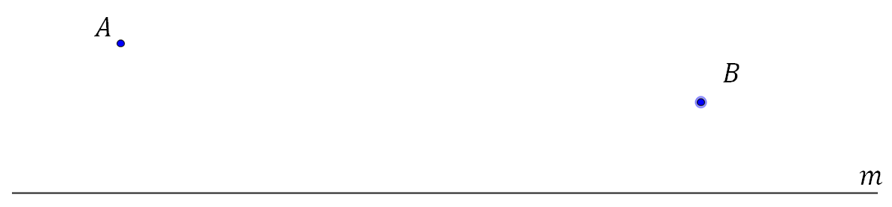
From our assumption that Nature is Lazy, it is clear that our task is to find the shortest path from \(A\) to \(m\) to \(B.\) That is, we have an Optimization Problem.
Begin by reflecting \(B\) across \(m\) in our imagination and denote this reflection by \(B_R.\)
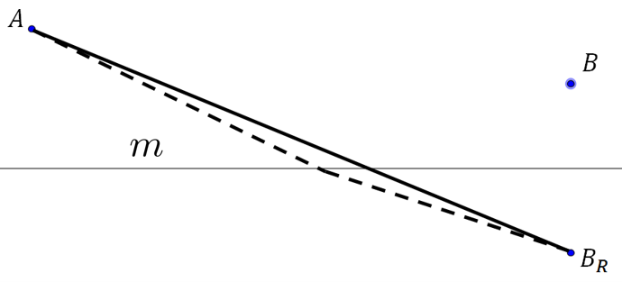
Next we reflect \(B_R\) back across \(m\) so that it falls onto \(B\text{,}\) and we reflect those portions of the solid and dotted paths that are below line \(m\text{,}\) in the same way.
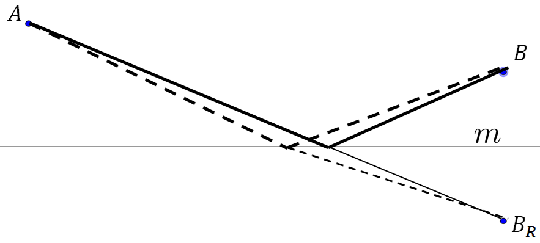
Problem3.3.
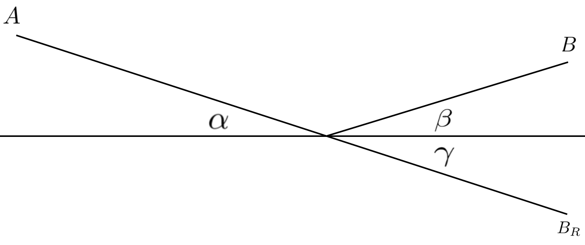
Suppose we label the angles in the previous diagram as follows:
(a)
Explain why \(\angle\gamma=\angle\beta\text{.}\)
(b)
Explain why \(\angle\gamma=\angle\alpha\text{.}\)
(c)
And finally, conclude that \(\angle\alpha=\angle\beta\text{.}\)
Thus the angle of incidence (\(\alpha\)) will equal the angle of reflection (\(\beta\)) provided light adheres to the Nature is Lazy principle and really does travel by the shortest possible path.
Problem3.4.
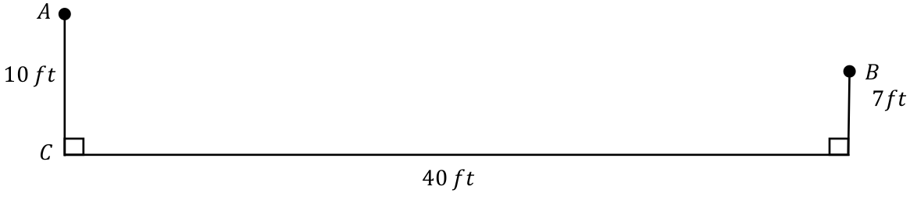
If a spotlight is mounted at point \(A\text{,}\) how far from point \(C\) must point \(D\) be so that the light will be reflected to point \(B\text{?}\) Justify your answer.
Problem3.5.
As long as it is not spinning sideways a billiard ball will bounce just like a beam of light. In the sketch below what must \(x\) be to sink the ball into the side pocket at \(S\text{?}\) Make sure that you explain how you obtained your answer.
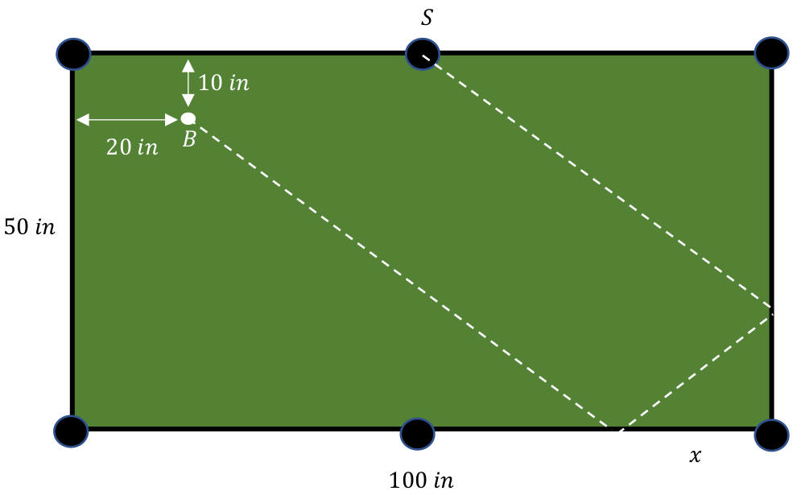
Another optimization problem that we can solve without Calculus (this time we’ll use Algebra) is the following.
Example3.6.Maximizing Area.
Out of all rectangles with a given fixed perimeter, which one encompasses the greatest area?
A reasonable guess is that the correct shape is a square. But a guess, no matter how much it feels right, is just a guess. We need a convincing demonstration.
To see that this actually is the correct shape, consider a square whose side is \(s.\) If \(s\) is the length of one side then the perimeter of our square is (the fixed value) \(4s\) and the area is \(s^2\) (also fixed). Suppose we now increase of two opposite sides the length by \(x.\) To maintain the same perimeter, we must now decrease the width by the same \(x.\) The area of this new rectangle is \((s-x) \times (s+x)\) is \((s-x)(s+x)=s^2-x^2\lt{}s^2\) but its perimeter is still \(4s\text{.}\)
Thus the square has a larger area than this rectangle with the same perimeter. Moreover, since we didn’t specify a value for \(x\) our conclusion holds for all possible values of \(x\text{.}\) That is, every rectangle with perimeter \(4s\) has a smaller area than the square with perimeter \(4s\text{.}\)
Subsection3.3.2Digression: Variables, Constants, and Functions
It is easy to have the impression that using a letter, like \(s\text{,}\) to represent quantity automatically means that the quantity can vary — that it is “variable.” This is not true. There are three situations in which a letter is used to represent a given quantity.
Variables:
For example, the area of a square is given by \(A=x^2,\) where \(x\) is the length of one side. If we think of \(x\) as a variable — if it can take on any positive value — then this expression gives us the area of all possible squares.
Constants:
Sometimes letters are used to designate unchanging quantities — constants (also called parameters) — when the actual value of the constant is irrelevant. For example, the area of all rectangles where one side is some fixed value, say \(c\text{,}\) but the other varies is given by \(A = c\cdot
x,\) where \(x\) is variable as before. Since we don’t care what the size of the fixed side is we don’t choose a specific length for it. We just let \(c\) represent that fixed size, whatever it is. The crucial fact here is that we have a rectangle, not what size the rectangle is.
The difference between variables and constants is mostly in the way we think about them. Constants are fixed, but unknown. Variables are not fixed.
Functions:
Sometimes a varying quantity depends on the values of one or more other varying quantities. In that case the dependent variable is said to be a function of the independent variable. We saw this above when we said the area of a rectangle with a fixed side length, \(c\text{,}\) was
\begin{equation*}
A=c\cdot x.
\end{equation*}
Most often we would write this as
\begin{equation*}
A(x)=c\cdot x.
\end{equation*}
The “\((x)\)” part of “\(A(x)\)” just tells us that that the dependent variable \(A\) depends on is the independent variable \(x\text{.}\) The name we give to the dependent variable ( \(A\) in this case) usually serves double duty as both the name of the dependent variable, and the name of are also sometimes called functions. In this example \(A\) is a function of \(x\text{.}\)
If you are inclined to be persnickety, you can make a reasonable argument that if \(A(x)=cx\) then \(A\) depends on both \(c\) and \(x\text{.}\) And you’d be right. But the tradition is to only put variables inside the parentheses, not parameters.
These are simple distinctions now, but it will be useful for you to get in the habit of making sure it is clear in your mind what is variable, what is constant, and which variables are functions of other variables. As the problems get more complex and we need several variables, parameters, and functions, just untangling all of this can become problematic. Keep in mind that the distinction is purely in how we choose to “think about” a given symbol, not in how we manipulate it algebraically.
The following problem is a variation on Example 3.6 and can be solved similarly.
Problem3.7.
Out of all rectangles with a fixed perimeter, which one has the shortest diagonal? Justify your answer.
As we mentioned above, Problem 3.7 can be done in a manner similar to Example 3.6. But what about the following?
Example3.8.
Consider all square based boxes with a fixed surface area \(S\text{.}\) Does the cube enclose the largest volume?
To do this problem in the same manner as Example 3.6, observe that a cube with side \(s\) would have a volume of \(s^3\) and a surface area of \(6s^2\text{.}\) Suppose we change the lengths on the base from \(s\) to \(s+x\text{.}\) Notice that if \(x\gt0\) then we will be increasing the lengths on the base and if \(x\lt0\) then we will be decreasing the lengths. The only restriction is that \(0\lt s+x\) so as to be a length. This says that \(-s\lt x\lt\infty\text{.}\) (In theory, we can make the lengths of the base as long as we wish.) To maintain a surface area of \(6s^2\text{,}\) we will need to adjust our height appropriately. Let’s call this new height \(h\text{.}\)
Problem3.9.
Proceed as in Example 3.8 to show that in order to maintain a surface area of \(6s^2\text{,}\)\(h\) must be \(h=\frac{s^2-sx-\frac{x^2}{2}}{s+x}\text{.}\) Use this to show that the volume of this new box is
How does this address the original question about the cube having the largest volume?
Hint.
Why did we write \(V\) in this rather peculiar way?
Problem 3.9 shows that proceeding in this ad hoc manner is becoming more difficult. Difficulties of this kind are what prompted mathematicians in the seventeenth century to search for more systematic methods for handling such optimization. These techniques ultimately led to the invention of Calculus. We’ll come back to the this problem later in this chapter.
In its simplest form an Optimization Problem can be described as follows: Given that \(y\) depends on \(x\text{,}\) find the value of \(x\) that makes \(y\) as large (or as small) as it can possibly be.
For example, if \(y=x^2-\frac{29}{21}x+\frac{10}{21}\) then \(y\) will be as small as it can possibly be when \(x=\frac{29}{42}\text{.}\) The question is, how did we find \(x=\frac{29}{42}\text{?}\)
One of the mathematicians who developed techniques for solving optimization problems was Pierre de Fermat 13 (\(1601-1665\)) who created what has been called the Method of Adequalty. Fermat’s method was based on the simple observation that if the maximum value of \(y\) occurs when \(x\) is equal to say, \(6\text{,}\) then when \(x\) is very near \(6\text{,}\)\(y\) will almost be equal to its maximum value.
You can see this in the graph above. Notice that the maximum number of daylight hours (about \(14.5\)) occurs just after \(169\) days (in fact, at day \(172\)) and that for several days before or after we have about the same number of hours of daylight. This is also true near the minimum which occurs at day \(356.\) Regardless of what the variables represent if the graph of a function, \(f(x)\text{,}\) is continuous the near a maximum or minimum: \(f(x+h)\approx f(x)\) as long as \(h\) is not too big.
Fermat’s simple idea was to purposely make the mistake of setting \(f(x+h)\) actually equal means to equalize. When something is adequate, then it is equal to the need.} to \(f(x)\text{.}\) He then rearranged the formulas algebraically and at the crucial point he would set \(h=0\) to “make it correct.” An example will make this clearer.
Example3.11.
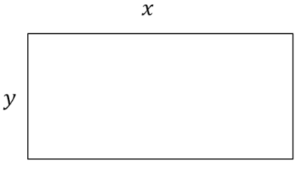
In Example 3.6, we showed that out of all rectangles with a fixed perimeter, the one with the largest area is a square. Next we will use Fermat’s Method of Adequality to examine the related question: Out of all rectangles with a fixed area, does a square have the smallest perimeter?
Consider a rectangle whose length is given by \(x\) and width is given by \(y.\) The area of the rectangle is given by \(A=xy\) and the perimeter is given by \(P=2x+2y.\)
The problem is to minimize \(P\) while holding \(A\) constant. More precisely, our objective is to minimize the function \(P=2x+2y\text{,}\) subject to the constraint that the area, \(A=xy\text{,}\) is fixed. First, we will use our constraint \(A=xy\) to eliminate one of the variables and substitute into \(P\text{.}\) Solving for \(y,\) we get \(y=A/x.\) Then,
Earlier we had made the “mistake” of setting \(P(x+h)=P(x)\) (knowing that this is not true). Now we “make it correct” by setting \(h=0\text{.}\) This gives: \(1=\frac{A}{x^2}, \text{ or } x^2=A. \) Substituting this into \(y=\frac{A}{x},\) we get \(y=\frac{A}{x}=\frac{x^2}{x}=x.\)
Thus \(P\) is minimum when \(y=x,\) which is to say, when the rectangle is actually a square. A moment’s thought should make it clear that there is no maximum value for \(P.\)
Fermat’s method is very slick. However it contains an inherent logical flaw. We begin by setting \(P(x+h)\) equal to \(P(x)\text{,}\) even though we know we are making an error. This seems like it might be a flaw but it really isn’t. When we set \(P(x+h)=P(x)\) we are asking, “What happens if they are equal?” The computations leading up to equation (3.3) are the answer to that question.
But notice that we got from equation (3.2) to equation (3.3) by dividing by \(h.\) From arithmetic you know that you can only divide by \(h\) if \(h\) is not zero. Fortunately it is clear that \(h\ne0\) since the whole point of introducing \(h\) is for \(x+h\) and \(x\) to be two different values. However, in the final step, after Equation (3.3), we took \(h=0\) to “make it correct” but if \(h\) is zero then we couldn’t have divided by \(h\text{.}\) We seem to be chasing our tails. We need for \(h\) to be equal to zero and not be equal to zero at the same time!
This is the logical flaw.
Since we began with the assumption that \(h\neq0\) we can’t just change our minds later. We can’t have both \(h=0\) and \(h\neq0\text{.}\)
Despite this logical flaw, Fermat’s technique does seem to produce the correct answer. So let’s explore it and see what happens.
Drill3.12.
(a)
\(f(x)=x(100-x)\)
(b)
\(q(x) = x^2-2x+4\)
(c)
\(g(x)=x^4-4x^3+6x^2-4x\)
Drill 3.12 shows that Fermat’s method does not indicate whether the computed value of \(x\) is at a maximum or a minimum. Often the context of the problem provides the additional information needed to make that determination. Example 3.11 and Problem 3.13 both provide such a context.
Problem3.13.
Consider a rectangular box with a square base, as seen here.
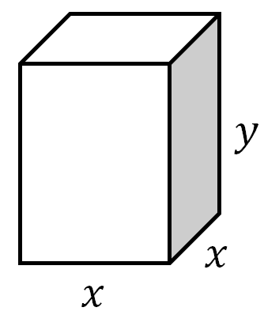
(a)
Find a formula for the volume, \(V\text{,}\) and the surface area, \(S\text{,}\) of the box.
(b)
Suppose we want to determine which box has the least surface area, given a fixed volume. What is our objective and what is our constraint? Use Fermat’s Method of Adequality to find the dimensions of the box that solves this problem. Is the minimal box a cube?
A few minutes of thought should convince you that what makes Fermat’s method work is the fact that near a maximum or minimum, the curve is practically horizontal. That is, its slope is nearly zero.
Fermat recognized that finding a maximum or minimum by his method was a special case of finding the slope of (the line tangent to) the curve and he modified his method to determine the slope of a curve even when it is not horizontal.
Before we pursue Fermat’s modification, it might be a good time to brush up on some basics regarding the slopes of lines. No doubt you are already familiar with all of the following formulas for the equation of a line:
These formulas are all really just rearrangements of one another. We use three different rearrangements because in different contexts one of them is usually simpler to use than the others. Through most of Calculus you will probably find the Point-Slope version to be the most convenient to use.
Drill3.14.
(a)
Use the appropriate formula for the equation of a line to find an equation of each of the following lines:
with slope \(2\) and \(y\)-intercept \((0,7)\)
with slope \(-8\) and \(y\)-intercept \((0,5)\)
with slope \(-2\) and \(x\)-intercept \((7,0)\)
with slope \(5\) and passing through the point \((2,-8)\)
with slope \(-4\) and passing through the point \((6,-1)\)
passing through the points \((2,8)\) and \((4,-2)\)
passing through the points \((4,3)\) and \((2,3)\)
(b)
Show that the Point-Slope formula follows from the fact that the slope of a line can be determined using any two points on the line.
(c)
Show that the Slope-Intercept formula is really a rearrangement of the Point-Slope formula.
(d)
Show that the Point-Slope formula follows from the Two-Point formula.
(e)
What does the two-point formula reduce to if \(y_0=y_1\text{?}\)
What does the two-point formula reduce to if \(x_0=x_1\text{?}\)
Notice that in the two-point formula, as given we need to assume that \(x_0\ne x_1\text{.}\) Can you rearrange the formula so that this is not a problem?
(f)
Show that the equation of the line with \(x\)-intercept \((a,0)\) and \(y\)-intercept \((0,b)\) can be written in the form: \(\frac{x}{a}+\frac{y}{b}=1. \) Notice that this equation is only valid if \(a\ne 0\) and \(b\ne 0.\)
Determine the equation of the line if \(a=0\text{.}\)
Determine the equation of the line if \(b=0\text{.}\)
Problem3.15.
(a)
In the diagram below \(L_1\) is obtained from \(L_2\) by translating (but not rotating) \(L_2\text{,}\) as indicated by the arrows. Use the diagram to show that parallel lines have the same slope.
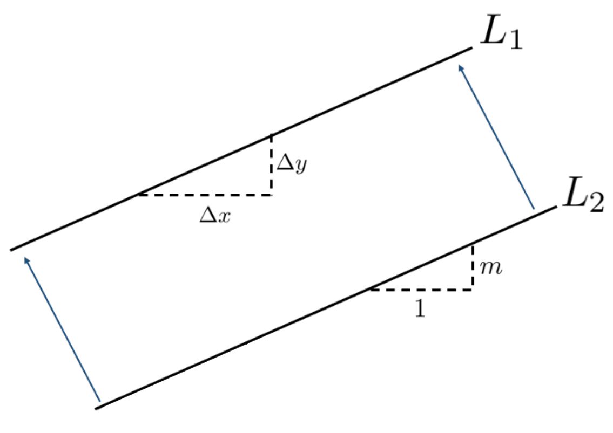
(b)
In the diagram below we have taken \(L_1\) from the previous figure, and rotated by \(90^\circ\text{.}\) Use this diagram to show that perpendicular lines have slopes that are negative reciprocals of each other.
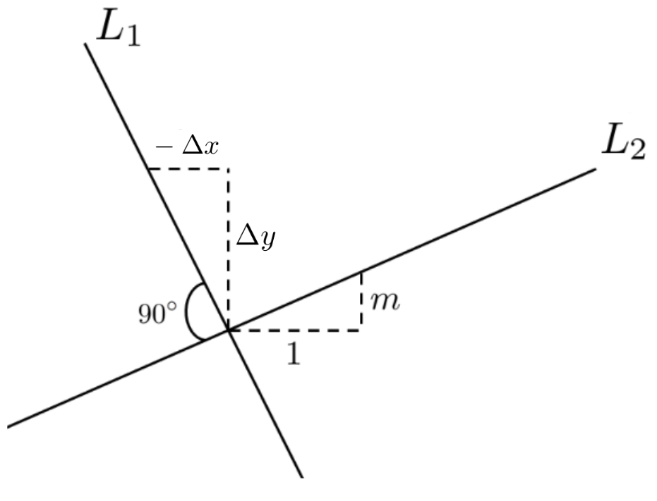
Drill3.16.
Find the equation of the line:
(a)
parallel to \(y=3x-2\) and passing through \((3,-3)\)
(b)
perpendicular to \(y=3x-2\) and passing through \((3,-3)\)
(c)
parallel to \(2x+3y=7\) with \(y\)-intercept \((0,5)\)
(d)
perpendicular to \(2x+3y=7\) and passing through the point \((-1,5)\)
Problem3.17.
Find the equations of the two lines such that each one is a perpendicular distance of \(5\) units away from the line \(y=\frac{4}{3} x+2\) and parallel to it.
Now that you’ve had a chance to brush up on slopes, let’s see how Fermat modified his method to determine the slope of a curve. We will start by determining the slope of the graph of \(y=x^2\) at the point \((1,1).\)
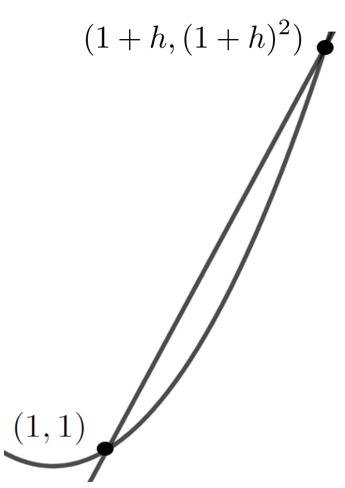
We need two points to determine the slope of a line, so with Fermat’s method in mind, we choose another point on the curve \(y=x^2\) very close to \((1,1).\) Since we don’t really care which point we take as long as it is close to \((1,1)\) we introduce the parameter, \(h,\) which we think of as very small. The points \((1,1)\) and \((1+h,(1+h)^2)\) are thus very close together. This is represented in the sketch at the right.
The slope of secant line joining \((1,1)\) and \((1+h,(1+h)^2)\) is given by
As before we set \(h=0\text{.}\) Thus the slope of the line tangent to the graph of \(y=x^2\) at \((1,1 )\) is \(2.\)
Problem3.18.
(a)
Use Fermat’s method for tangents to compute the slope of the line tangent to \(y=x^2\) at the generic point \((a,a^2)\text{.}\)
First plot the graph \(y=x^2\text{.}\) Then, on the same set of axes, plot the line the line through the point \((a,a^2)\text{,}\) and tangent to the graph of \(y=x^2\text{,}\) for each of \(a=-2, -1, 0, 1, 2\text{.}\)
What is the relationship between the slopes at \((a,a^2)\) and \((-a, a^2)\text{?}\) Is this consistent with what you see when you plot the graph of \(y=x^2\text{?}\)
(b)
Use Fermat’s method for tangents to compute the slope of the line tangent to \(y=x^3\) at the point \((a,a^3).\)
First plot the graph \(y=x^3\text{.}\) Then, on the same set of axes, plot the line the line through the point \((a,a^2)\text{,}\) and tangent to the graph of \(y=x^3\text{,}\) for each of \(a=-2, -1, 0, 1, 2\text{.}\) You should notice something interesting about the tangent lines at \(\pm1\) and \(\pm2.\)
What can you say about the tangent lines at \((a, a^3)\) and \((-a, -a^3)\text{?}\)
Problem3.19.
(a)
Use Fermat’s Method to find a formula for the slope of the tangent line to \(y(x)= x^3 +2x^2\) at the point \((a, y(a))\text{.}\) How does this answer compare with the results of the previous two problems?
(b)
What would happen if we used Fermat’s Method to find the slope of the tangent line to \(y(x)= x^3+2x^2+b\) at the point \((a, y(a))\) where \(b\) is any constant? Does this make sense graphically? Explain.
As we noted earlier, while Fermat’s Method of Adequality seems to work it has a fundamental logical flaw. Fermat’s contemporary, Renè Descartes 15 \((1596-1650)\text{,}\) provided an alternative method in his book Discourse on Method 16 which is free of logical issues. Unfortunately Descartes’ technique is also very difficult to use and as we will see is of limited applicability.
Descartes’s method is often called the Method of Normals because what he actually finds is the line normal to (perpendicular to) a curve. Once the line normal to the curve at a point is obtained, the line perpendicular to the normal line will be tangent to the curve. Descartes’ Method relies solely on the fact (from Greek Geometry) that at each point of a circle the radius and tangent line through the point are perpendicular. We’ll illustrate Descartes’ idea with the following example.
Example3.21.
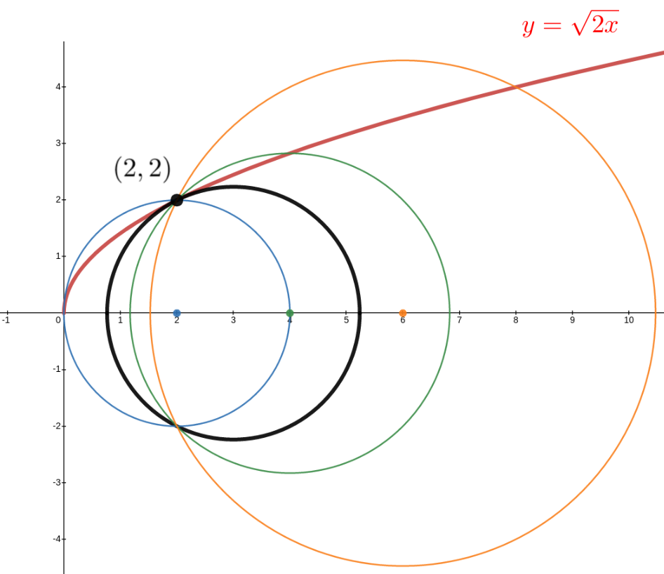
To find the slope of the normal (and, eventually the tangent) line to the graph of the curve \(y=\sqrt{2x}\) at the point \((2,2)\) Descartes’ approach was to look at the family of circles with centers on the \(x\)-axis and passing through the point \((2,2).\) The sketch at the right displays several members of of that family of circles. Notice that each circle crosses the parabola at the point \((2,2)\text{.}\) We are searching for the center of the solid black circle which touches (is tangent to) the parabola at \((2,2)\text{.}\) If we can find the center of the black circle then the radial line through the point \((2,2)\) will be normal to the parabola at \((2,2)\) and the slope of the tangent line will be the negative reciprocal of the slope of the normal.
We now want to turn the geometric problem of finding the intersection of our circle and parabola into an algebraic problem. Let \((a,0)\) denote the coordinates of the center of a circle in that family, then the equation of the circle with center \((a,0)\) is \((x-a)^2+y^2=r^2\) where \(r\) is the length of the radius of the circle and \(a\) is a parameter. Since we require our circle to pass through the point \((2,2)\) the length of this radius will be the distance from \((2,2)\) to \((a,0)\text{,}\)\(r=\sqrt{(2-a)^2+2^2}.\) Thus we have
At this point it is tempting to use the Quadratic Formula to solve for \(x\) and get (typically) two distinct solutions for \(x\) in terms of \(a\text{.}\) But the fact is we really don’t care about the variable \(x\text{.}\) We want to find the value of \(a\) which ensures that the circle and the curve intersect exactly once.
Think about this for a moment. We get a single solution when we use the Quadratic Formula to solve this equation precisely when the discriminant (the part under the square root) is zero.
Problem3.22.
Use the Quadratic Formula to show that the discriminant of Equation (3.5)) is \((2-2a)^2-4(4a-8)\text{.}\) Setting the discriminant in Drill 3.22 equal to zero and solving, we get
So the center of the circle touching the curve only once is at \((3, 0)\) and the line segment from \((3,0)\) to \((2,2)\) is normal (perpendicular) to the graph of \(y=\sqrt{2x}\text{.}\) Descartes and Fermat are generally credited with the invention of Analytic Geometry which is a technique that allows us to move problems from Algebra to Geometry or, as in this problem, from Geometry to Algebra.
Problem3.23.
Descartes would not have approached this problem using the idea of a discriminant as we just did. He knew that the only way the circle and the parabola could be tangent at \(x=2\) is if \(2\) is a double root of Equation (3.5)). Since a quadratic polynomial only has two roots, this means that Equation (3.5) must be
Like any powerful tool, Analytic Geometry must be used carefully. Sometimes, as in this problem, the transition from Geometry to Algebra can generate algebraic solutions that have no corresponding geometric solution. An extraneous root is the most common example of this.
Problem3.24.Extraneous Roots.
Show that the roots of \(x^2+(2-2a)x+(4a-8)=0\) are \(x=2\) and \(x=2a-4\text{.}\) Notice that when \(a\ge2\) and \(a\ne3\) we the parabola and circle will have two intersection points (as seen in the graph in Example 3.21). When \(a\lt{}2\) we get one positive and one negative root, but the parabola and the circle cross only at \((2,2)\text{.}\) How do we make peace with this apparent contradiction? \hint{Look closely at the equation for the parabola. Can \(x\) be negative?
Example 3.21 illustrates that there is a significant difference between curves touching (curves that are tangent) and curves crossing (curves that intersect). Finding the line tangent to a curve is actually much more subtle than you would expect at first. But this is not the appropriate place to start that conversation so we will hold off until we reach Section 5.1.
Drill3.25.
Now that we’ve found the center of the circle tangent to the curve \(y=\sqrt{2x}\) at \((2,2)\text{,}\) use this to find the equation of the lines normal and tangent to the curve at that point. Plot the curve and these two lines on the same set of axes to see if they really are normal and tangent to the curve.
Problem3.26.
Use Descartes’ Method of Normals to find the slope of the line tangent to the curve \(y=\sqrt{x}\) at the point \((4,2)\text{.}\)
Problem3.27.
Use Descartes’ Method of Normals to find the slope of the line tangent to the curve \(y=x^2\) at the point \((3,9)\) and compare with Problem 3.18.
Hint.
You may want to use circles that are centered on the \(y\)-axis instead of the \(x\)-axis.
Problem3.28.
Apply Descartes’ Method of Normals to the line \(y-3x=2\) at the point \((1,5).\) What equation did you find for the tangent line? Does this make sense to you?
Descartes’ Method, unlike Fermat’s, is free of the logical pitfalls. But it is algebraically cumbersome because it requires that we find the “double root” of a polynomial. Double roots of quadratic functions like the one in Example 3.21 are relatively easy to find. But for higher degree polynomials this can be a substantial problem. For transcendental functions like \(y=1-\cos(x)\) this problem is almost insurmountable without Calculus.
Section3.6Roberval, Conic Sections, and the Dynamic Approach
Subsection3.6.1Speed, Velocity, and Rates of Change
Descartes and Fermat were co-creators of Analytic Geometry — the use of Algebra to solve geometric problems — so their methods are simultaneously algebraic and geometric in nature. That is, their methods are static. There is no motion involved. But at it’s heart, Calculus gives us a way of dealing with the properties of objects as they change. It is the mathematics of motion. So we will need to think more dynamically.
If quantity \(A\) changes by \(\Delta A\) each time quantity \(B\) changes by \(\Delta B\) we say that the rate of change of \(A\) with respect to \(B\) is \(\frac{\Delta A}{\Delta B}\text{.}\)
For example, in a video game if your character gains one hundred hit points whenever you cast a certain spell we would say that the rate of change of your hit points is one hundred points per spell, denoted \(100 \frac{\text{points}}{\text{spell}}\text{.}\) If you gain fifty hit points every second time you quaff a potion we write \(\frac{50\ \text{points}}{2\ \text{quaffs}}\) or, equivalently, \(25 \frac{\text{points}}{\text{quaff}}\) and we say that the rate of change of hit points with respect to quaffs is twenty-five. Notice how naturally the properties of fractions come into play: \(\frac{50\ \text{points}}{2\ \text{quaffs}} = 25
\frac{\text{points}}{\text{quaff}}\text{.}\)
On the other hand if you lose \(15\) hit points each time an enemy strikes you three times with a sword then your hit points are decreasing at a rate of \(\frac{15\ \text{points}}{3\ \text{strikes}} = 5
\frac{\text{points}}{\text{strike}}\text{.}\) It is inconvenient to specify whether \(A\) is increasing or decreasing verbally so we adopt the convention that a negative rate of change is decreasing and a positive rate of change is increasing.
Speed is the rate of change we are most familiar with in daily life. If you are driving on a flat, straight, road your speed is the rate of change of your position, \(\Delta x\text{,}\) with respect to the passage (change) of time, \(\Delta t\text{.}\) If your speedometer reads \(60\) we say your speed is sixty miles per hour: \(60 \frac{\text{miles}}{\text{hour}}\text{,}\) meaning of course that in one hour you will travel sixty miles. This is often abbreviated to \(60\) mph. We will model a flat, straight, road as the \(x\)-axis with the positive direction to the right, as is customary. Of course, on this flat, straight, road we could be going \(60 \frac{\text{miles}}{\text{hour}}\) to the right or to the left. Since there are only two directions possible, we can again use negative numbers to indicate the direction of travel as depicted in the sketch below.
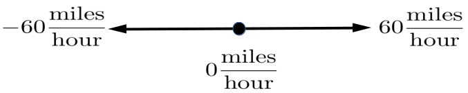
However if we are on a broad flat plain, as depicted in the sketch below we can travel in any direction whatsoever.
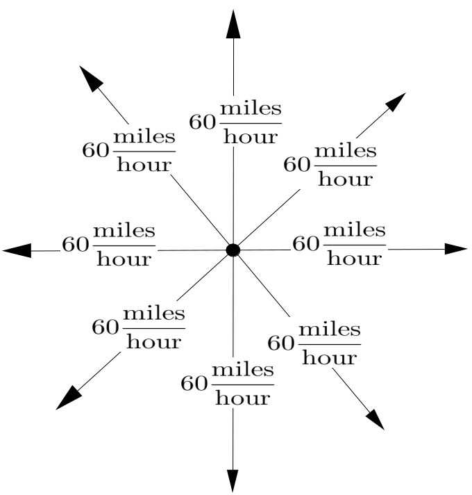
Notice that our sketch indicates that there are eight cars, all traveling at \(60 \frac{\text{miles}}{\text{hour}}\text{,}\) but in different directions. That is, the speed of each car is \(60 \frac{\text{miles}}{\text{hour}}\text{.}\) But it should be clear that a single number is not adequate to fully describe the motion of these cars. We also need to specify the direction of travel and simply using plus or minus is no longer sufficient.
When we specify the speed and direction of motion of some object we are stating its velocity. This can be difficult at first because in casual conversation we use the words speed and velocity interchangeably, so we tend to think of them as synonyms. But in a technical setting speed and velocity, while related, have different meanings. Speed is how fast we’re going. In the sketch at the left the speed of all of the cars is \(60 \frac{\text{miles}}{\text{hour}}\text{.}\) But their velocities are all different. The velocity of one car is \(60 \frac{\text{miles}}{\text{hour}}\) to the north, the velocity of another is \(60 \frac{\text{miles}}{\text{hour}}\) to the west, the velocity of a third is \(60 \frac{\text{miles}}{\text{hour}}\) to the southeast, and so on.
Gilles Personne de Roberval 17 \((1602-1675)\text{,}\) a contemporary of Fermat and Descartes, used arrows to indicate the velocity of moving objects just as we have. The length of the arrow represents the speed of the object and the direction of travel is the direction that the arrow points. This works well in the kind of geometric arguments he used as it enabled him to develop a method for constructing tangents which is dynamic in nature.
Suppose you are on a moving sidewalk like those in an airport and the sidewalk is moving at \(3 \frac{\text{feet}}{\text{second}}\text{.}\) If you stand still on the sidewalk then you are still moving at \(3 \frac{\text{feet}}{\text{second}}\text{.}\)
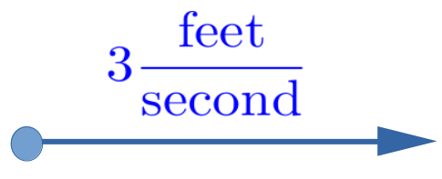
If you are walking along the sidewalk at \(4 \frac{\text{feet}}{\text{second}}\) and in the same direction the sidewalk is moving then it is pretty clear that you are moving at a rate of \(7 \frac{\text{feet}}{\text{second}}\text{.}\)
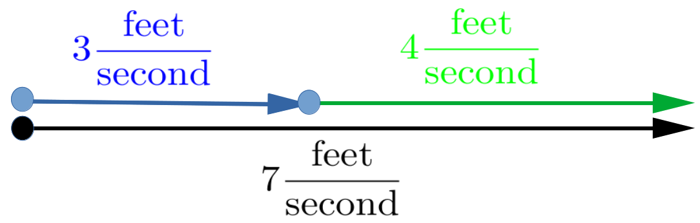
Of course, if you turn around and walk against the sidewalk, then your speed would be \(1 \frac{\text{foot}}{\text{second}}\text{.}\)
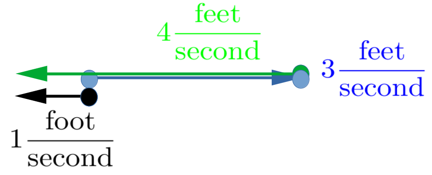
If you are walking against the sidewalk but slower than the sidewalk is moving, say at \(2 \frac{\text{feet}}{\text{second}}\text{,}\) then you are again moving at \(1 \frac{\text{foot}}{\text{second}}\) but in the other direction.
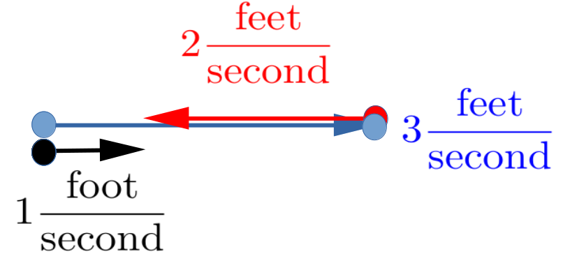
Since there are only two possible directions all this could have been done without arrows by just adding signed numbers where the sign indicates the direction: \(3+ 4=7\text{,}\)\(3+(-4)=-1\text{,}\)\(3+(-2) =1\text{,}\) but what if there are more directions available?
Using arrows allows us to bring this discussion into a more general setting. In the examples above notice that the resulting velocity (the black arrow) was always obtained by attaching the tail of the green or red arrow to the head of the blue arrow.
This works equally well if more directions are available, like when we are moving in a plane instead of a straight line.
For example, suppose we are swimming across a river at a speed of \(2 \frac{\text{feet}}{\text{second}} \) and the river is flowing at \(3 \frac{\text{feet}}{\text{second}}\text{.}\) Assuming that we are swimming perpendicular to the current, we have the situation depicted below. \centerline{\includegraphics*[height=1.2in,width=2.4in]{../Figures/Vector4}}
Drill3.29.
(a)
In the diagram above what does the length of the black arrow represent physically?
(b)
What is the length of the black arrow?
In general you can think of the velocity of an object moving in a plane as being compounded of a horizontal velocity (the blue arrow in [cross-reference to target(s) "DRILLVectorAddition" missing or not unique]) and a vertical velocity (the red arrow in [cross-reference to target(s) "DRILLVectorAddition" missing or not unique]). This is easiest to think about when the component velocities are perpendicular but this isn’t strictly necessary. For example, you don’t need to be swimming perpendicular to the current. As seen in the diagram at the right to find the result of two non-perpendicular velocities (the solid red and blue arrows) we need only form the parallelogram as shown. The resulting velocity is then represented by the black diagonal arrow.
Roberval assumed that a curve in the plane is generated by a point whose motion is an aggregate of two known motions, which can be represented as arrows. The arrows are then “added” by finding the diagonal of the parallelogram generated by the two arrows. This diagonal will point in the direction of motion at that point on the curve and will point tangent to the curve.
Example3.31.
Suppose a point is moving in the plane so that its horizontal speed is \(1\) unit per second and its vertical velocity is \(2\) units per second as in the diagram at the right. Clearly our point is moving along the line \(y=2x\text{.}\)
If \(t\) represents time in seconds and if the point starts at the origin, then its coordinates are given by \(x(t)=t\) and \(y(t)=2t\text{.}\) Since both \(x\) and \(y\) are needed to locate the point we will join them together notationally like this:
You might quite reasonably ask why we’ve gone to all this bother just to have two different ways to represent a particular line: \(y=2x\text{,}\) and \(P(t)=
=\ParamEqTwo{t}{2t}\) The difference is in how we “think about” the graph. When we write \(y=2x\) we are thinking of the entire graph. When we write \(P(t)=
\ParamEqTwo{x(t)}{y(t)} \) there is an implicit understanding that (\(t\))ime is passing and we are thinking about the motion of the point. Thus when \(t=1\) the point is at \((1,2)\) when \(t=2\) it’s at \((2,4)\text{.}\)
Think of the line as a road. The formula \(y=2x\) describes the entire road, whereas the expression \(P(t)=
\ParamEqTwo{x(t)}{y(t)} = \ParamEqTwo{t}{2t} \) tells us the point’s location on the road at any given time, \(t\text{.}\)
The idea of representing velocities with arrows is quite a powerful and common technique for representing non-linear motion. Roberval used this technique to find the tangent lines of the conic sections (as we will soon see) as well as more general curves. Since Roberval’s time this idea has been developed considerably beyond what Roberval did. In fact we are skirting the edge of some very deep ideas here. In modern terms these arrows would be called vectors. Vector Addition is then done by the Parallelogram Rule, which is essentially what we did with our arrows above: Form the parallelogram and find its diagonal. The full force of vector analysis was not available to Roberval, and we won’t need it, so we will not take you any further down this path but we encourage you visualize velocities, and any other directed quantity, as composed of horizontal and vertical components whenever you can. You will see this representation in more detail later in your education and it will help if you have already begun thinking in these terms.
Problem3.33.
Suppose the position of a point in the plane is given by \(P(t)= \ParamEqTwo{3t}{6t}\text{.}\)
(a)
What is the horizontal speed of the point?
(b)
What is the vertical speed of the point?
(c)
What is the speed of the point in the direction of motion?
(d)
Compare the motion of the point in this problem to the motion of the point in [cross-reference to target(s) "EXAMPLERectilinearMotion" missing or not unique].
Problem3.34.
Suppose a point is moving along the line \(y=mx+b\) with a horizontal speed of \(1\) unit per second.
(a)
Find a representation of the point’s position in the form \(P(t)=\ParamEqTwo{x(t)}{y(t)}\text{.}\) \comment{There are a variety of correct solutions here. You must find a representation and then show that it is correct. }
(b)
What is the speed of the point in the vertical direction?
(c)
What is the speed of the point in the direction of motion?
Problem3.35.
Suppose a point is moving along the line \(y=mx+b\) with a horizontal speed of \(5\) units per second.
(a)
What is the speed of the point in the vertical direction?
(b)
What is the speed of the point in the direction of motion?
Problem3.36.
Suppose the position of a point in the plane is given by \(P(t)= \ParamEqTwo{2t}{5t}\text{.}\)
(a)
What is the horizontal velocity of the point?
(b)
What is the vertical velocity of the point?
(c)
What is the velocity of \(P\) in the direction of motion?
Problem3.37.
We drop an object from a helicopter which is traveling horizontally with a constant velocity of \(1\) meter per second. After it leave the helicopter the vertical velocity of the object at time \(t\) will be \(-9.8t\) meters per second as in the following diagram:
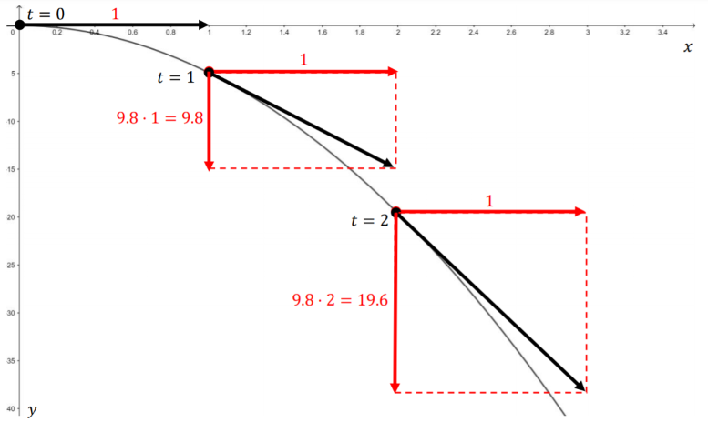
If Roberval’s method works then the speed of the point at any time, \(t\text{,}\) will be the length of the diagonal of parallelogram of velocity arrows at time \(t\text{.}\) Find a formula for the speed of the point and any time \(t.\)
Subsection3.6.2The Tangent Lines of the Conic Sections
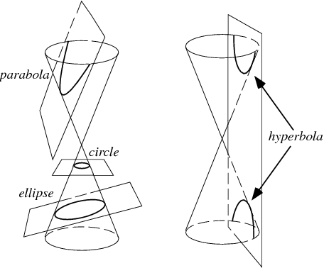
Parabolas, ellipses, and hyperbolas are called conic sections, or just conics, because they were originally defined as the intersection of a cone with planes situated at various angles, as shown in the sketches at the right.
While interesting, the original geometric definitions won’t do for our purposes because they are entirely static. There is no motion involved.
To use Roberval’s dynamic approach to constructing tangent lines to the conic sections we will resort to yet a third equivalent definition. We start with the parabola.
Subsubsection3.6.2.1The Tangent to a Parabola
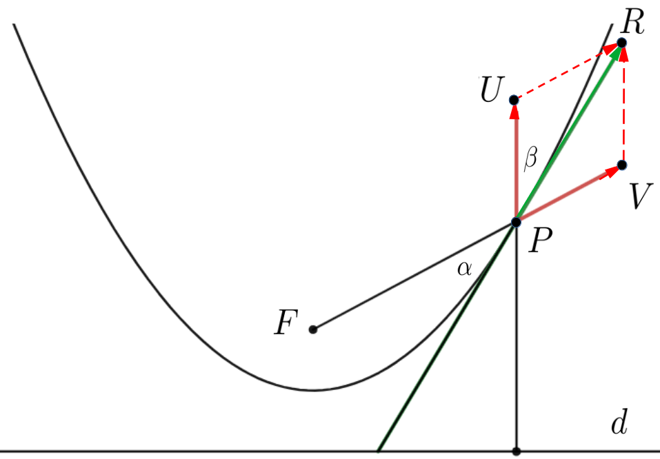
Figure3.38.Roberval’s view of the tangent to a parabola
As seen in Figure 3.38, a parabola can also be thought of as the set of points, \(P\text{,}\) in a plane which are equidistant from a fixed point, \(F\text{,}\) called the focus of the parabola, and a specific line, \(d\text{,}\) called the directrix of the parabola. Adopting Roberval’s dynamic viewpoint, we can think of \(P\) as tracing out the parabola by moving so that these distances stay equal to each other.
Problem3.39.
(a)
Use Figure 3.38 to explain why it must be that the speed at which \(P\) moves away from \(F\) must equal the speed at which \(P\) moves away from \(d\text{.}\)
Hint.
Suppose these speeds were not equal. What would this say about the distances from \(P\) to \(F\) and from \(P\) to \(d\text{?}\)
(b)
If \(PV\) represents the velocity of the motion of \(P\) away from \(F\text{,}\) and \(PU\) represents the velocity of the motion of \(P\) away from \(d\text{,}\) then according to Roberval, the diagonal, \(PR\) of the parallelogram \(PVRU\) is tangent to the parabola. Use the result of part (a) to explain why this parallelogram is a rhombus. (A rhombus is a parallelogram where the four sides have equal length.)
(c)
In Figure 3.38 the angle \(\beta\) is between the arrows \(PU\) and \(PR.\) We have also extended the arrow \(PR\) downward to form the angle \(\alpha\) with \(FP.\) Given that the parallelogram \(PVRU\) in the previous figure is a rhombus, show that the two angles, \(\alpha,\)\(\beta\) are congruent.
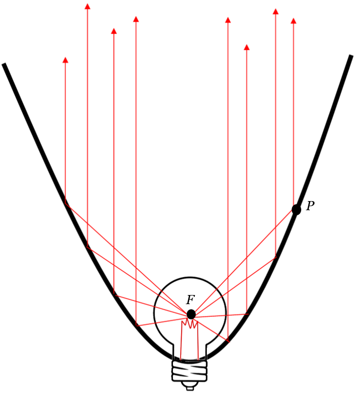
That \(\alpha\) and \(\beta\) in the previous problem are congruent has an interesting consequence in optics. Imagine that the inside of our parabola is a mirror, and that a light source has been placed at the point \(F.\) As we have seen when light reflects off of a flat mirror the angle of incidence is equal to the angle of reflection. Since this mirror isn’t flat the angles of incidence and reflection are measured from the line tangent to the parabola at the point where the light strikes the mirror. Thus the angle of incidence of a beam emerging from \(F\) and striking the parabola at \(P\) will be \(\alpha\) in our diagram and the angle of reflection will be \(\beta (=\alpha).\) It follows that a light beam emerging from \(F\) and reflecting from the parabola at any point will follow a path parallel to the axis of symmetry of the parabola after reflecting from the interior of the parabola.
You can see this in action with your car headlights or a flashlight. The reflector is cast in the shape of a parabola and the light emitting filament is place at the focus, so all of the light which strikes the reflector gets reflected in that direction.
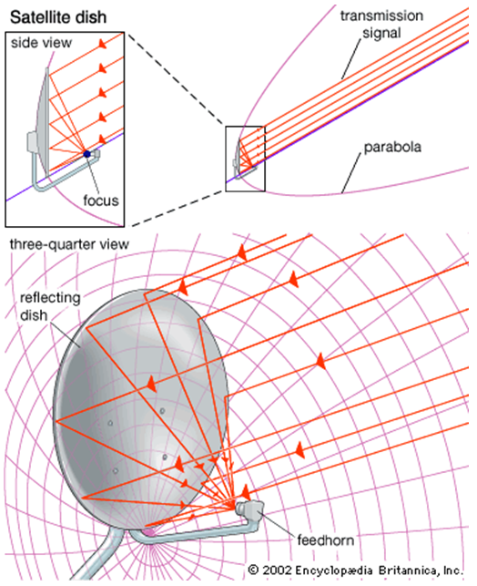
Now turn this around. Any light beam coming parallel to axis of symmetry and striking the parabolic mirror will pass through the focal point \(F\text{.}\) The light is thus focused and the image appears larger. This fact was used by Isaac Newton in the seventeenth century to design a new, and better, telescope than the one used by Galileo a generation earlier. Galileo’s telescope was based on the refraction of light as it passes through shaped lenses. Through his study of optics Newton learned that the magnification effect could also be achieved via reflection. It was his invention of the reflecting telescope that first brought Newton into scientific prominence.
The fundamental optical principle he used, a light beam traveling parallel to the axis of symmetry, after reflecting from the interior of a parabolic mirror, will pass through the focus of the parabola, is the underlying design principle of all reflective telescopes, large and small, today.
In fact, you use this every day. Since radio waves are a form of electromagnetic radiation, just like visible light, this is also a fundamental design point for both radar antennas, satellite cable TV dishes, and the antennas at the tops of cell phone towers.
Subsubsection3.6.2.2The Tangent to an Ellipse
Geometrically, an ellipse is the set of points in a plane, the sum of where the sum of the distances from two fixed points (foci) is a constant. Following Roberval we can generate an ellipse by combining two motions: one away from one focus (\(F_1P\)) and one toward the other focus (\(PF_2\)) as in the sketch below.
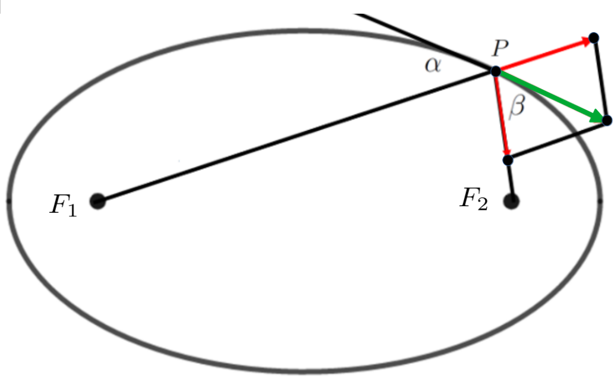
If we set \(d_1\) equal to the length of \(F_1P\) and \(d_2\) equal to the length of \(PF_2\text{,}\) then \(d_1+d_2\) is constant.
Because \(d_1+d_2\) is constant it should be clear that the rate at which \(d_1\) lengthens is related to the rate at which \(d_2\) shortens. These rates of change are represented by the red arrows in our sketch.
Problem3.40.
Explain why the parallelogram in the sketch above must be a rhombus and use this to show that angle \(\alpha\) is congruent to angle \(\beta.\)
Hint.
An argument very similar to the one used in Problem 3.39 will work.
From Problem 3.40 we see that any light ray, sound wave, etc., emanating from one focus of an ellipse will reflect off of the interior of the ellipse to the other focus.
A playful example of the reflective properties of an ellipse are the so-called “whisper galleries.” If you and a friend stand at the foci of a room in the shape of an ellipse you will be able to converse in whispers even if you are very far apart. This is because the sound waves from your friend’s voice will spread out to the walls and then reflect back to the other focus, where you are standing. Naturally, the volume of sound from any single location in the interior of the ellipse will have dropped considerably in transit. However, since all of them travel the same distance to get to you they arrive at the same time and the volume you hear is the sum of all of the individual reflected volumes.
The whisper gallery shown above is next to the Oyster Bar in Grand Central Station, New York City. The young woman standing at the support column in the background on the left and the young man at the column at the right in the foreground are standing at the foci of the elliptical ceiling. Each can here the other clearly as they speak quietly.
There is another whisper gallery in Statuary Hall in the Capitol building in Washington DC. This room was originally the meeting hall for the House of Representatives. It is said that when John Quincy Adams was a representative he would eavesdrop on his political enemies by placing himself at one focus of the room whenever he saw them talking quietly at the other.
A more serious application of the reflective properties of the ellipse is used in modern medicine to treat kidney stones. The treatment is called Extra-corporeal Shock Wave Lithotripsy, and it works by generating shock waves at one focus of a reflecting ellipse. The reflective property of the ellipse then concentrate the waves at the other focus. Placing the stone, which is inside the patient’s body, at the second focus allows the shock waves to pummel the stone into dust.
Subsubsection3.6.2.3The Tangent to an Hyperbola
If an ellipse is the locus of points the sum of whose distances from two given points is constant it is natural to ask, “What do we get when the difference of their distances is constant?” That is the shape called the hyperbola seen in the diagram below. \centerline{\includegraphics*[height=1.8in,width=2in]{../Figures/Hyperbola1}} As before, we set \(d_1\) and \(d_2\) equal to the lengths of \(F_1P\) and \(F_2P\text{,}\) respectively. An hyperbola has the property that \(d_1-d_2\) is constant.
Problem3.41.
Explain why the parallelogram in the sketch above must be a rhombus and use this to show that angle \(\alpha\) is congruent to angle \(\beta.\) As before in our diagram the red arrows represent the velocity of \(P\) in the direction from \(F_1\) to \(P\) and from \(F_2\) to \(P\text{.}\)
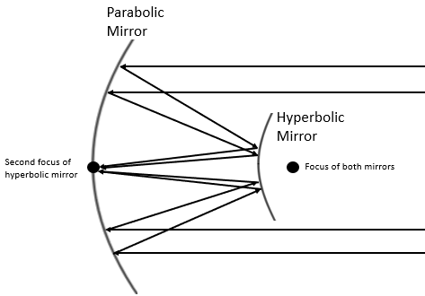
The hyperbola also has interesting reflective properties. If a beam of light is aimed at one focus it will reflect off of the hyperbola toward the other focus. This property can be used to further refine the design of reflecting telescopes and antennae. The figure at the right shows the design of Cassegrain antenna. The large, primary mirror on the left is parabolic and shares a focus with the smaller, secondary, hyperbolic mirror on the right. Light reflecting off of the primary mirror is directed at the shared focus on the right where it is reflected to the other focus at the primary mirror. A detection device is then placed at the secondary focus to collect the amplified signal.
Roberval’s use of arrows to represent velocities provides an intuitive way to understand the reflective properties of the conic sections. Moreover, thinking of curves as being traced out in time it gives us a dynamical way of looking at curves. This was a viewpoint that Newton adopted in his version of the Calculus.
Section3.7Snell’s Law and the Limitations of Adequality:
When light passes from one medium to another, say from air to water, it bends. This property is called refraction. The physical law governing refraction is known as Snell’s Law, named after the Dutch Astronomer Willebrord Snell 20 \((1580-1626)\) though it was accurately described before that time. In modern terms, Snell’s Law can be stated as follows.
Theorem3.42.Snell’s Law of Refraction.
Suppose that light travels with a velocity of \(v_1\) in the first medium and velocity \(v_2\) in second medium, and that \(\theta_1\) and \(\theta_2\) are as seen in the diagram below.
Notice that if \(v_1=v_2\) this says that \(\sin(\theta_1)=\sin(\theta_2)\) and the path of the line would be a straight line.
A number of mathematicians, including both Snell and Fermat, gave derivations of Snell’s Law, but we will focus on Fermat’s method. To attack this problem, Fermat refined the Nature is Lazy assumption a bit. Instead of assuming that that light would follow the shortest path, he assumed that light would follow the path that takes the least time.
Notice that this is consistent with our observations concerning reflections from a mirror. In that case, the speed of light was constant so the shortest path was, in fact, the fastest path. But refraction occurs because the velocity of light changes when the surrounding medium changes.
Let’s see what happens when we try to use Fermat’s Method of Adequality to find this fastest path.
Problem3.43.
Assuming that the velocity of light is \(v_1\) in the first medium and \(v_2\) in the second, use the following diagram to show the time, \(t\text{,}\) for light to travel along the path from \(A\) to \(C\)\(B\) is \(\frac{\sqrt{a^2+x^2}}{v_1}+\frac{\sqrt{b^2+(c-x)^2}}{v_2}. \)
Of course the next step would be to use Fermat’s Method of Adequality to minimize \(t\text{,}\) but the square roots involved make the Algebra daunting to say the least. Despite these difficulties Fermat was able to show that \(t\) is minimized precisely when Snell’s Law holds.
Although it is possible to derive Snell’s Law with the tools we now have it is very difficult so we won’t attempt it here. Instead we will return to this problem in Chapter 9 where we will complete the derivation of Snell’s Law using the rules of Calculus. That will be much simpler.
It seems that our efforts to solve optimization problems using pre-Calculus techniques has hit an impasse. To be sure those techniques, and others of a similar nature, were very clever and it must be admitted that they yielded interesting and correct results. However for the most part they were ad hoc methods and quite limited in their applicability. We need a way to overcome these limitations.
This is exactly what the invention of Calculus in the mid-seventeenth century did. The title of Leibniz’ first published work on Calculus makes this very clear:
A New Method for Maxima and Minima, as Well as Tangents, Which is Impeded Neither by Fractional nor Irrational Quantities, and a Remarkable Type of Calculus for This.
It is time for us to learn about this Remarkable Type of Calculus.